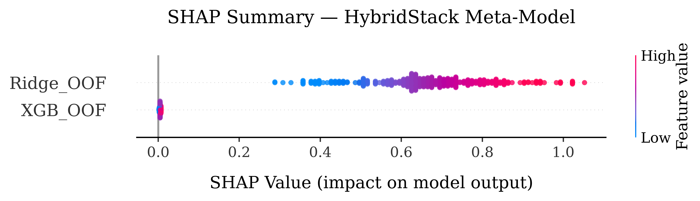
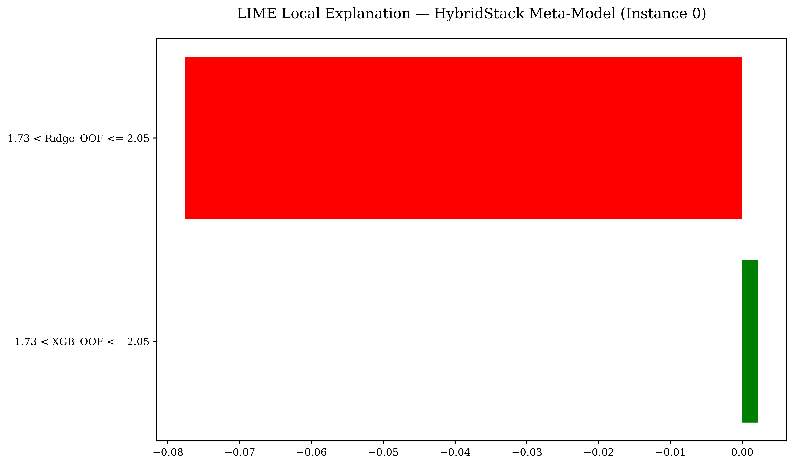
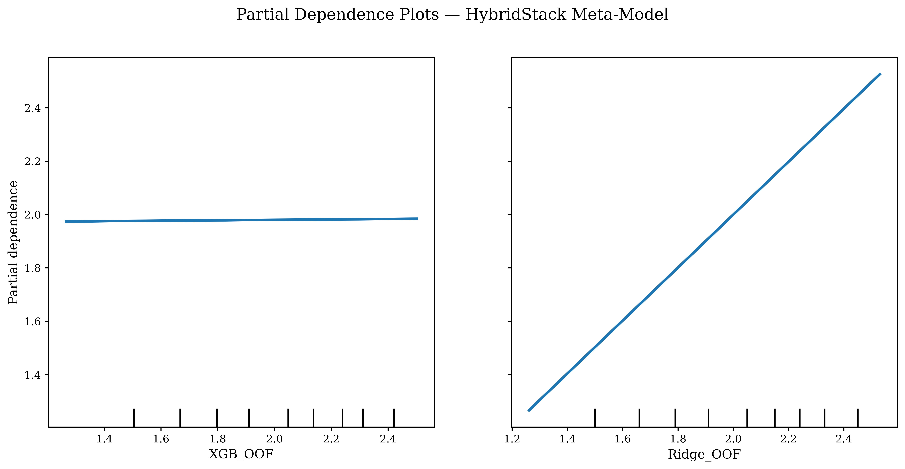
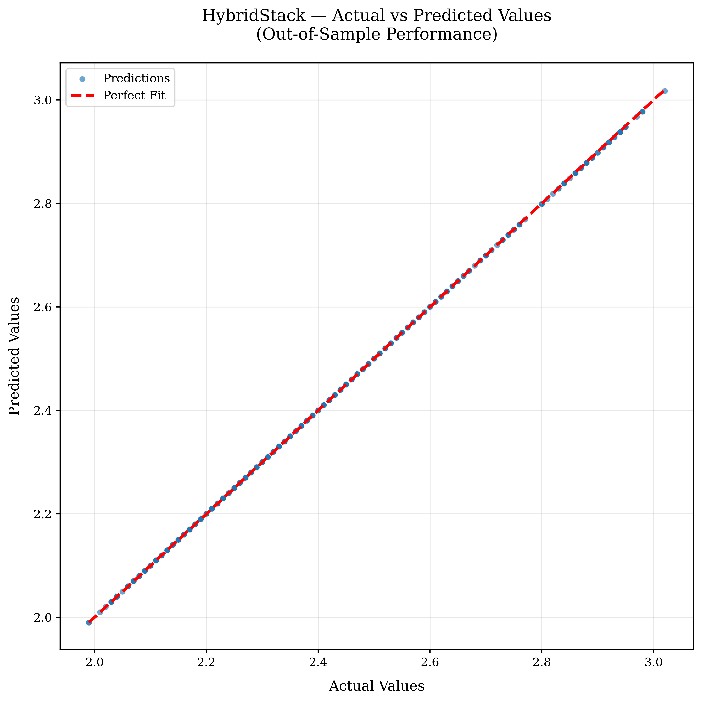
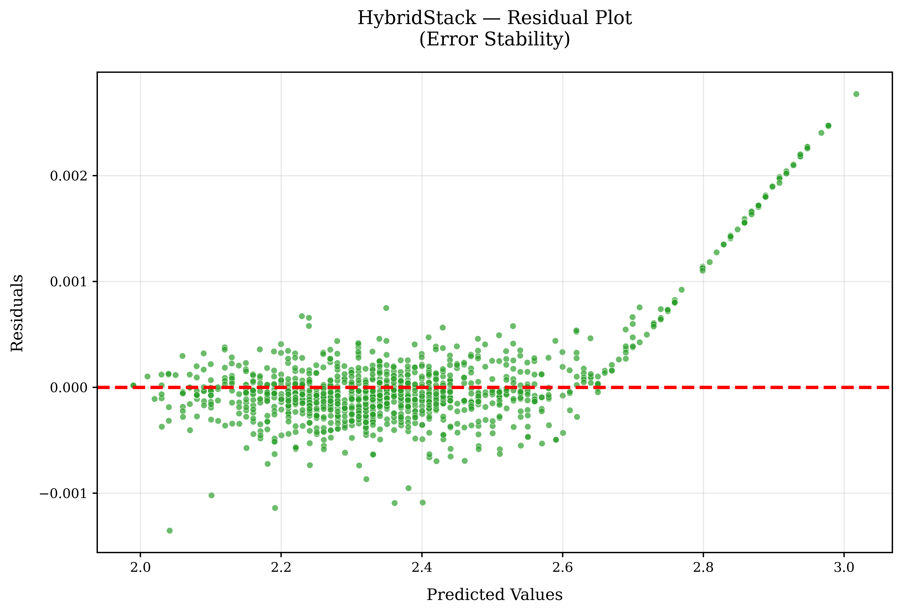

HybridStack: Explainable Hybrid Ensemble for Accurate Inflation Forecasting with High-Frequency Macro-Financial Data
A novel two-stage stacked generalization ensemble uniting gradient-boosted trees and regularized linear regression via Bayesian optimization, achieving near-perfect predictive fidelity on U.S. 10-Year Breakeven Inflation Expectations.
The Inflation Forecasting Conundrum
Why conventional statistical equations and standalone machine learning estimators struggle with financial market inflation expectations.
Structural Regime Breaks
Events such as the 2008 liquidity freeze, 2020 pandemic lockdowns, and the 2022 energy shock create acute non-linear structural breaks that rupture static statistical assumptions and linear stationarity.
Collinearity & Mixed Frequency
Macro indicators from the Federal Reserve arrive at mixed temporal cadences (daily yields, monthly CPI, quarterly GDP) with severe multi-collinearity ($r > 0.95$), causing ordinary least squares to overfit and destabilize.
The Stacking Solution
HybridStack marries regularized linear shrinkage (Ridge) with deep non-linear gradient tree partitioning (XGBoost) under a meta-learner, neutralizing individual model liabilities while preserving full post-hoc explainability.
Two-Stage Stacked Generalization Pipeline
An end-to-end overview of the HybridStack architecture: from high-frequency macroeconomic data ingestion to out-of-fold meta-learning.
Data Ingestion & Feature Engineering
9 FRED indicators resampled with cubic splines, augmented with 5 autoregressive lags and a 7-day rolling window.
Stage 1 Base Learners & Bayesian Optimization
XGBoost (non-linear tree splits) and Ridge (L2 regularized linear dynamics) tuned independently via Gaussian Processes.
Chronological Out-of-Fold (OOF) Stacking
Strict non-shuffled chronological K-fold CV preventing look-ahead bias and data leakage into meta-features.
Stage 2 Ridge Meta-Learner Layer
Optimized linear combination weighting base predictions: ŷ = γ∗&sub1; fXGB(x) + γ∗&sub2; fRidge(x).
Tri-Method Explainability Suite (XAI)
Post-hoc auditing using SHAP (KernelSHAP game theory), LIME (local surrogates), and Partial Dependence Plots (PDP).
1. Macro Ingestion & Feature Engineering
Continuous ingestion of 9 high-frequency FRED macroeconomic indicators spanning January 2, 2006 to October 1, 2024 (6,848 daily observations). Resampled with cubic time-aware splines to harmonize mixed reporting frequencies.
Architectural Rationale
Autoregressive lag features capture short-term momentum, while the 7-day rolling mean smooths market microstructure noise without inducing temporal delay.
Macroeconomic Inflation Playground
Manipulate high-frequency economic inputs in real-time or test historic financial shocks to observe how HybridStack's two-stage ensemble calculates 10-Year Breakeven Inflation Expectations.
Macroeconomic Drivers
Adjust sliders or pick a historical crisisMarket-based inflation expectations align closely with the Fed's 2.0% target, reflecting high central bank credibility.
Benchmark & Evaluation Studio
Rigorous comparison of HybridStack against 15 baseline architectures across 7 standardized regression metrics on 6,848 daily observations.
| Rank | Model Architecture | MSE ↓ | RMSE ↓ | MAE ↓ | MAPE (%) ↓ | sMAPE (%) ↓ | MASE ↓ | R² ↑ |
|---|
🏆 15× Error Reduction Over Best Standalone Model
HybridStack achieves a Mean Absolute Percentage Error (MAPE) of 0.0291% compared to 0.4288% for Ridge Regression and 0.9443% for XGBoost, with an R² of 0.9999, proving the power of two-stage stacked generalization.
Visual Error Metric Comparison
Comparing HybridStack against top baseline contenders across error scales (Lower is Better).
Explainability & Transparency Studio
High-stakes macroeconomic policy demands full auditability. We utilize three complementary XAI methodologies to inspect global feature importance, local decisions, and non-linear partial dependencies.

Shapley Additive exPlanations (SHAP)
KernelSHAP allocates exact payout attributions derived from cooperative game theory. It decomposes each individual forecast into additive contributions across all $2^{|F|}$ feature coalitions.

Local Interpretable Model-agnostic Explanations
LIME approximates complex global model behavior locally by sampling perturbations around a specific test instance and fitting a sparse, interpretable linear surrogate.

Partial Dependence Plots (PDP)
Partial Dependence plots illustrate the marginal effect of individual meta-features on the predicted breakeven inflation rate, averaging out the effects of all other features.


Residual Error Stability
Residual analysis confirms homoscedasticity and zero bias across the entire prediction spectrum, with residuals clustered tightly around zero (±0.002%).
The 32-EDA Deep Dive Suite
Every file in the repository's eda/ folder contains an independent Python implementation and academic documentation. Explore all 32 analytical studies below.
Federal Reserve Economic Data (FRED)
Full provenance documentation for the 9 macroeconomic indicators and the target 10-Year Breakeven Inflation Rate.
🎯 Why the 10-Year Breakeven Inflation Rate (BEIR)?
The 10-Year Breakeven Inflation Rate is computed as the yield spread between nominal 10-Year U.S. Treasury securities and 10-Year Treasury Inflation-Protected Securities (TIPS). Because of its exceptional market liquidity and long, continuous historical record, it is the primary benchmark utilized by researchers, financial markets, and the Federal Open Market Committee (FOMC).
| # | Indicator Name | FRED Code | Native Frequency | Description | Source Link |
|---|---|---|---|---|---|
| 🎯 | 10-Year Breakeven Inflation Rate | T10YIE |
Daily | Target variable (10Y Nominal Treasury − 10Y TIPS yield spread) | FRED → |
| 1 | 5Y-5Y Forward Inflation Expectation | T5YIFR |
Daily | Market-based long-term forward inflation expectations | FRED → |
| 2 | Consumer Price Index for All Urban Consumers | CPIAUCNS |
Monthly | Headline consumer price index level | FRED → |
| 3 | Real Gross Domestic Product | GDPC1 |
Quarterly | Real inflation-adjusted economic output | FRED → |
| 4 | Unemployment Rate | UNRATE |
Monthly | Civilian unemployment rate (Phillips curve indicator) | FRED → |
| 5 | Federal Funds Effective Rate | FEDFUNDS |
Monthly | Central bank policy stance & overnight lending rate | FRED → |
| 6 | PCE Price Index | PCEPI |
Monthly | Personal consumption expenditures price index | FRED → |
| 7 | Nominal Broad U.S. Dollar Index | DTWEXBGS |
Daily | Trade-weighted foreign exchange currency strength | FRED → |
| 8 | WTI Crude Oil Spot Price | DCOILWTICO |
Daily | Energy and commodity price pressure benchmark | FRED → |
| 9 | 10-Year Treasury Constant Maturity Yield | DGS10 |
Daily | Nominal long-term risk-free interest rates | FRED → |
Code & Execution Hub
All datasets, model weights, and scripts are completely self-contained in the repository. Reproduce all findings in 4 easy steps.
Execution Order Guidelines
- Data Preparation:
data/New Merged Dataset/code.py - Exploratory Analysis:
eda/(32 self-contained scripts) - End-to-End Pipeline:
notebooks/HybridStack.ipynb - Standalone Models:
models/HybridStack/hybrid_stack.py - Explainability:
explainability/(SHAP, LIME, PDP)
Hardware & Determinism
Tested on Google Colab with NVIDIA T4 GPU acceleration. Fixed random seed (seed=42) ensures deterministic hyperparameter search trajectories and reproducible out-of-fold partitions.
Cite This Paper
If you find HybridStack or our macroeconomic datasets helpful in your research, please cite our published paper in Array (Elsevier).
Shiam, S. M. M. K., Neela, M., Biswas, A., & Chowdhury, M. R. (2026). HybridStack: Explainable hybrid ensemble for accurate inflation forecasting with high-frequency macro-financial data. Array, 31, 101003. https://doi.org/10.1016/j.array.2026.101003
@article{SHIAM2026101003,
title = {HybridStack: Explainable hybrid ensemble for accurate inflation forecasting with high-frequency macro-financial data},
journal = {Array},
volume = {31},
pages = {101003},
year = {2026},
issn = {2590-0056},
doi = {10.1016/j.array.2026.101003},
url = {https://www.sciencedirect.com/science/article/pii/S2590005626003267},
author = {S. M. Mohiuddin Khan Shiam and Meherunnesa Neela and Amrijit Biswas and Mahdy Rahman Chowdhury}
}Research Team
Researchers and supervisors behind the HybridStack framework and empirical investigations.